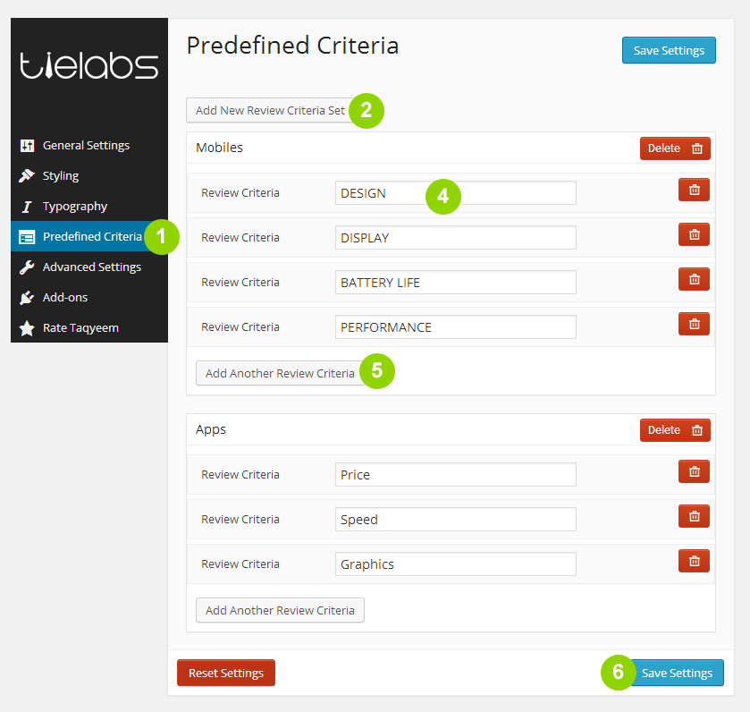
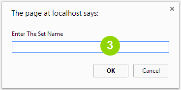
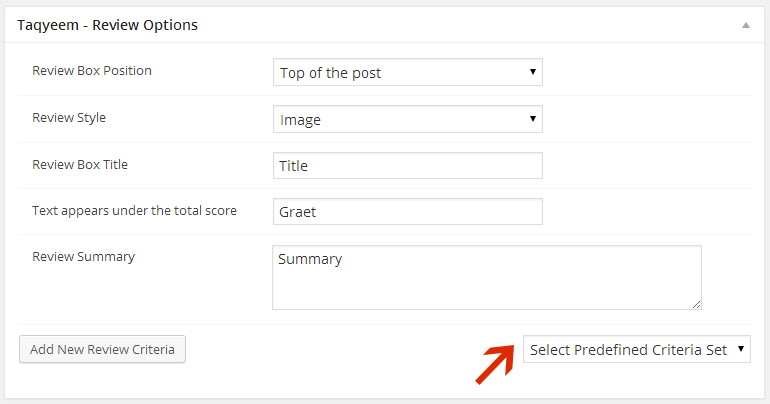

Taqyeem - Predefined Criteria Addon
By TieLabs
Thank you for purchasing my plugin . Please read this document and explore the item comments and FAQ items for further information and help.
For questions on basic WordPress installation/usage, HTML, JavaScript or CSS editing - please try the ThemeForest forums, W3Schools, the Wordpress Codex or Google as plugin errors/issues get top priority.
Don't Forget If You Like It, Rate It !
Installing The Plugin
Uploading The Plugin via FTP to Wordpress
You can also install The Plugin via FTP
- Decompress the .zip file you downloaded from CodeCanyon.
- Find the taqyeem-predefined folder (this directory is created when you unzip the file).
- Upload the taqyeem-predefined folder to your wp-content/plugins directory.
- Navigate to your Control Panel: Plugins
- Under Taqyeem Predefined Criteria, click Activate
Installing The Plugin from the WordPress Dashboard
You can install The Plugin via the WordPress plugin uploader without unzipping the file.
- Log into your WordPress admin panel
- Navigate to Plugins > Add New
- Click Upload
- Click Choose File and select the taqyeem-predefined download zip.
- Click Install Now.
Adding a Predefined Criteria Set

- Navigate to Posts > Predefined Criteria tab
- Click the "Add New Review Criteria Set" button to create a new set.
- In the pop-up window Enter a name for the set then hit Ok button .

- Enter a name for the Review Criteria .
- Click on Add Another Review Criteria button to add more review criteria.
- Once its all done, make sure you click the Save button.
Using a Predefined Criteria Set
- Check this for how to add a review post.
- In the Taqyeem - Review Options box ... use the Select Predefined Criteria Set Select menu to add the Criteria set you want .
